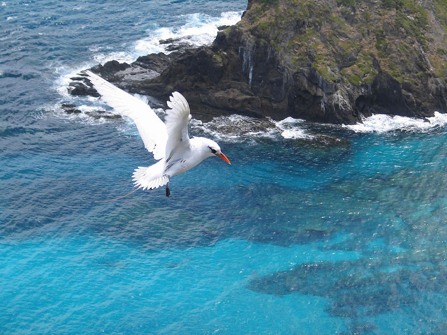
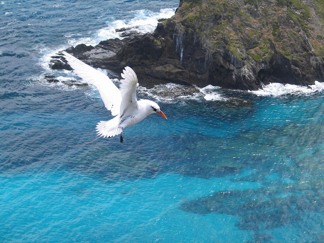

Lord Howe Island is Just Paradise. Immerse yourself in the spectacular surroundings and experience some of the world’s best day hikes, snorkelling on the coral reef, hand-feeding fish on Ned’s Beach and much more.

Home to 500 fish species and 90 species of coral, Lord Howe’s snorkelling is second to none.A luxuriant garden of Staghorn coral dominates the iconic snorkelling destination that is Erscott’s Hole, a natural wonder within a protected intertidal groyne. Snorkelers can get up close to tame fish conditioned to daily visits by glass bottom boats.The amazing Double Header Wrasse and the chameleon-like Blue Fish, which can change its body colour from dark green to sky blue in a matter of seconds, are common sightings.

Just 15 minutes by boat from Lord Howe rests an intriguing group of volcanic formations, dubbed the Admiralty Islands. Large pinnacles, coral reefs, larger schools of fish and diving depths of 15-40 metres characterise the islands.Eager divers flock to this area, and for good reason. Around 25 dive sites scattered around the atolls harbour some of Australia’s best diving spots. Noddy Island, Rupert’s Reef, Sugarloaf Island, Tenth of June Bombora, Tenth of June Deep, Flat Rock and North Rock are just a selection of spots which offer incredible diving rich in diverse marine life.

Keen surfers and body boarders head to Blinky Beach to experience what the locals have dubbed ‘Champagne Surf’.Located on the island’s east side, the beach is the most popular place to catch a ride on some of Australia’s least crowded waves. The unspoilt, white beach is a top spot to enjoy a relaxing picnic, take a refreshing swim in pristine turquoise waters, or to cast a line.
 
